Tool Bar
The tool bar has various options to access different functionalities. This section covers the tool bar functionalities that are common across the application. Below are some of them:
Device Group
The Device Group dropdown in the tool bar is used to select a device group to filter the data in any given page. The selected device group remains same across all the pages for a user. And the data shown in most of the pages is filtered based on the selected device group. 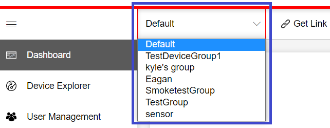
Ex: Dashboard- Device statistics, Device Explorer, Packages, etc. 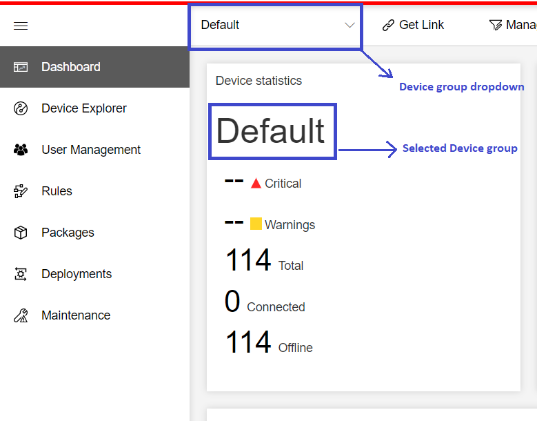
Note:
By default, the device group Default is selected for any user for the first login.
Get Link
Get Link is a button which lets the user copy the link for that page appended with the Selected Device Group ID. This helps share links with other users that target a specific Device Group ID.
Steps to copy link
- Navigate to the page for which the link (with Device Group ID) needs to be copied Ex: Device Explorer
- Click the Get Link button
- The Copy Link pop-up opens with the link that can be used to share
- Click Copy : This copies the link to the clipboard 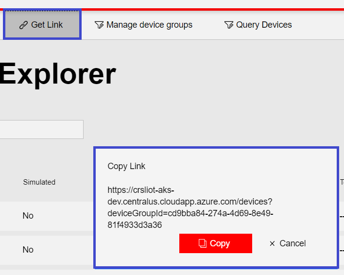
Manage Device Groups
The Manage Device Groups button allows a user to:
View Device group list
To view list of device groups present:
- Click the Manage device groups button from the toolbar
- The Manage device groups flyout opens
- The list of device groups is displayed under "Create new device group" button 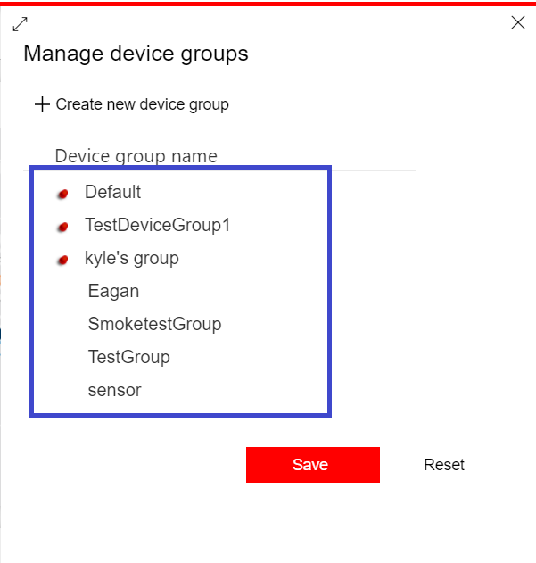
Create Device Group
A user can create a new device group using this option. Steps to create a new device group:
- Click Manage device groups button from the toolbar
- Manage device groups flyout opens
- Click Create new device group button 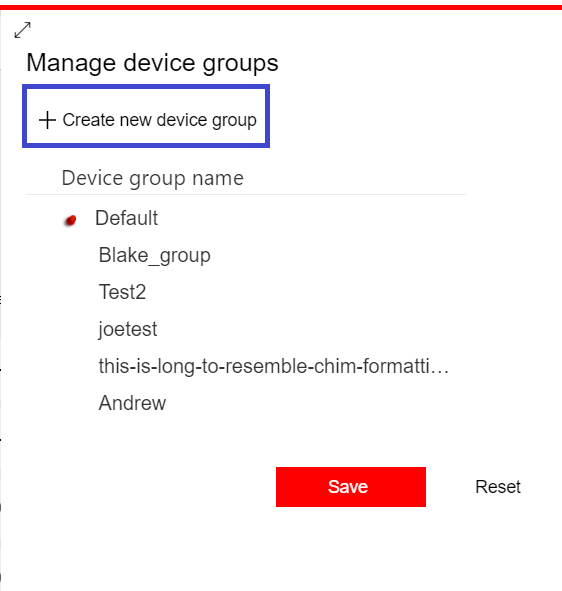
- A New device group form opens
- Below are the details to fill in:
Name(required) : This is a mandatory field. Enter a unique Device group name 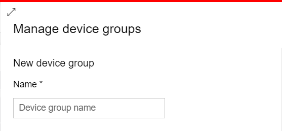
Conditions: A user can either add/remove a condition on which a Device group needs to be created. These conditions are used as filters on Devices.
- For adding a condition:
- Click Add Condition or a new condition already appears while creating a new device group. Populate the fields to add the condition
- Field(required): Lets the user select the field on which the filter needs to be created on devices (Ex: tags, properties, etc.)
- Operator(required): Lets the user select a logical operator like Equals, Greater than, etc.
- Value(required): Lets the user enter the value to compare against the data for the selected field using the selected operator
- Type(required): Allows the user to select the type of value: Number/Text 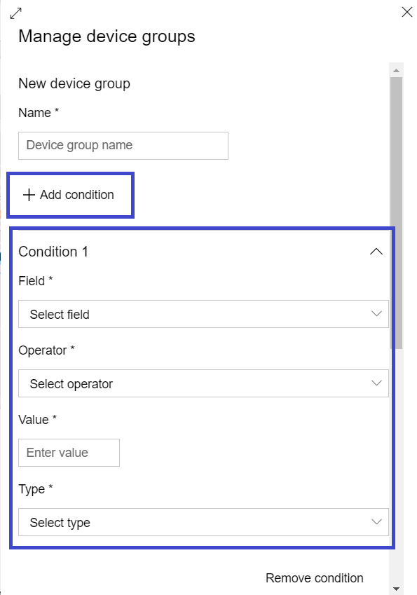
- For removing a condition:
- A Remove condition button is present below each condition 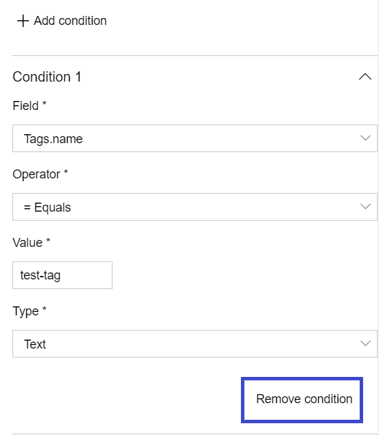
- For adding a condition:
Telemetry Format: This is used to filter the telemetry data of devices under the device group based on telemetry keys.
- To configure telemetry format,
- Click on Add
- Enter Key: This key is used in sending the telemetry data
- Enter Display Name 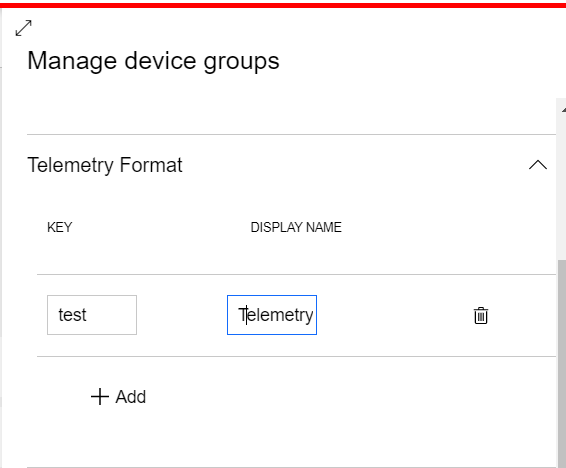
- To verify the telemetry format
- Add an entry under telemetry format (Ex: Key=temp and Display Name=Temperature)
- Create a device
- Simulate device telemetry by sending a message with different properties along with value for temp (Key from above) and any value Ex: { humidity: 60, temp: 20 } Note: Refer to this to simulate device telemetry using Azure online simulator
- Select the device and click "Show telemetry"
- You should be able to see only telemetry for temp(Temperature) 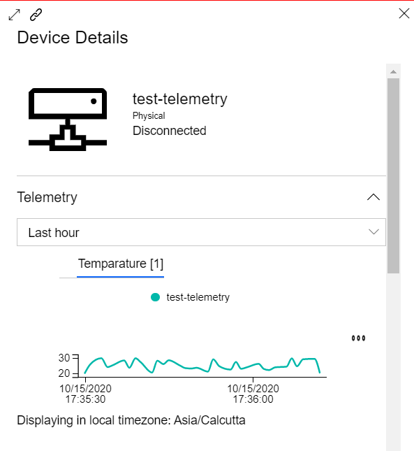
- To configure telemetry format,
Supported Methods: TODO
Edit Device Group
A user can edit an existing device group using this option. Steps to edit a device group:
- Click Manage device groups button from the toolbar
- The Manage device groups flyout opens
- The list of device groups is displayed under "Create new device group" button
- Click on the name of the device group to edit 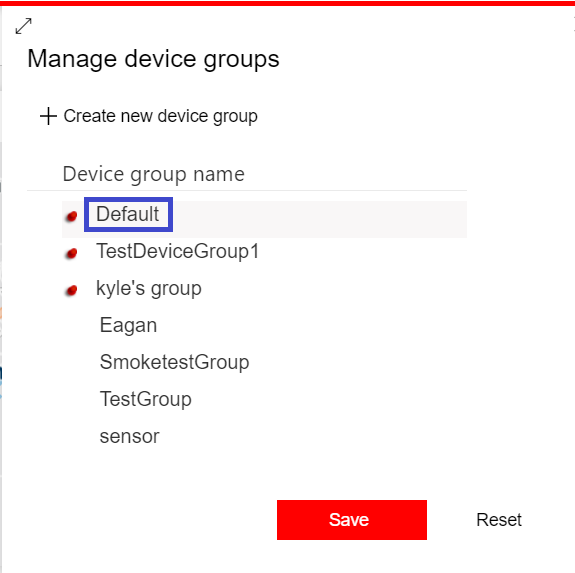
- The Manage device groups flyout display changes to show the "Edit device group" form where the existing device group details can be modified. Edit the details
- Click Save to save the updates
- Click Cancel in order to cancel and navigate back to Manage device groups 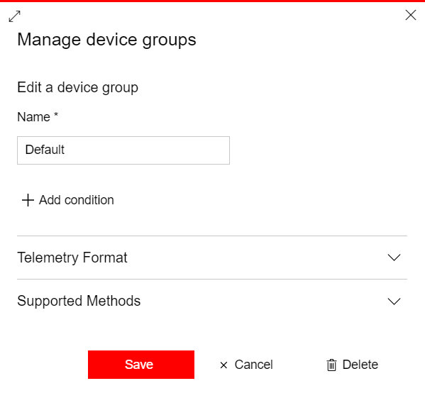
Delete Device Group
A user can delete an existing device group using this option. Steps to delete a device group:
- Click the Manage device groups button from the toolbar
- The Manage device groups flyout opens
- The list of device groups is displayed under the "Create new device group" button
- Click on the name of the device group to delete
- The display changes to "Edit device group". Scroll down the flyout to find the buttons Save, Cancel and Delete 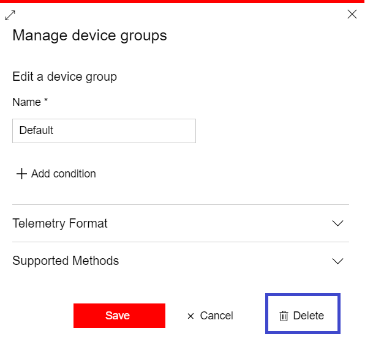
- Click the Delete button. A confirmation section appears
- Change the toggle to "Yes" and click Delete 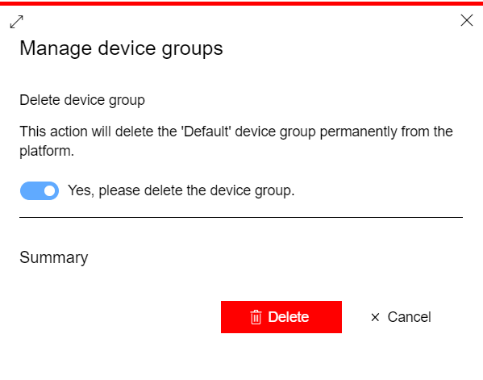
Pin Device Groups
A user can pin one/multiple device groups using this option. Pinned device groups always show on top of the Device group list.
Steps to pin/unpin device groups:
- Click the Manage device groups button from the toolbar
- The Manage device groups flyout opens
- The list of device groups is displayed under the "Create new device group" button
- Hover on the name of the device group to pin or unpin
- Pin Device groups: Click on the pin button that appears before the names of the Device groups 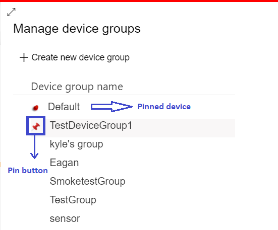
- Unpin Device groups: Pinned devices can be unpinned. Pinned devices appear on the top of the list. Click on pin(unpin) button that appears before the name of the Device group 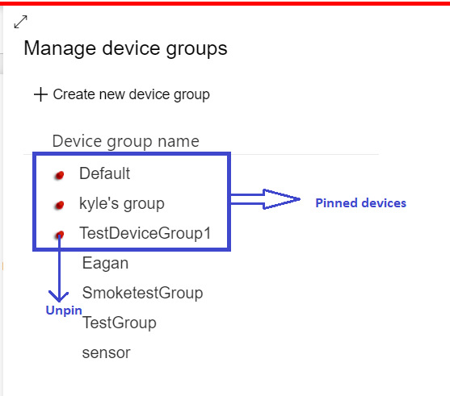
- Click the Save button to update the changes
- Click the Reset button to reset the changes 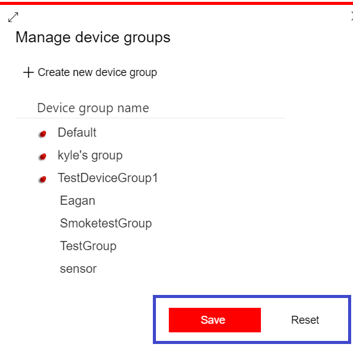
Time Period
The Time period dropdown is used in different pages to filter the data based on selected time interval.
Below are the available time period options: 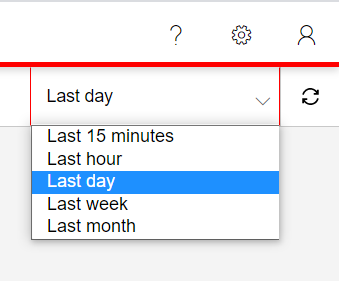
Note:
- The Time period dropdown can be found on pages like dashboard, maintenance and some other places in the application like Device Telemetry, etc.
- The default selected value for the Time period dropdown is Last hour
Last Refreshed
Last refreshed is a label and button combination which can be used to:
- Display the last-refreshed datetime of data on a given page when data is automatically refreshed
- Hover on the refresh button to view the last-refreshed datetime
- Manually refresh the data in a given page.
- Click the refresh button to manually refresh the data in the page
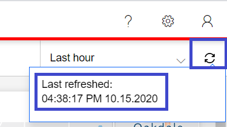